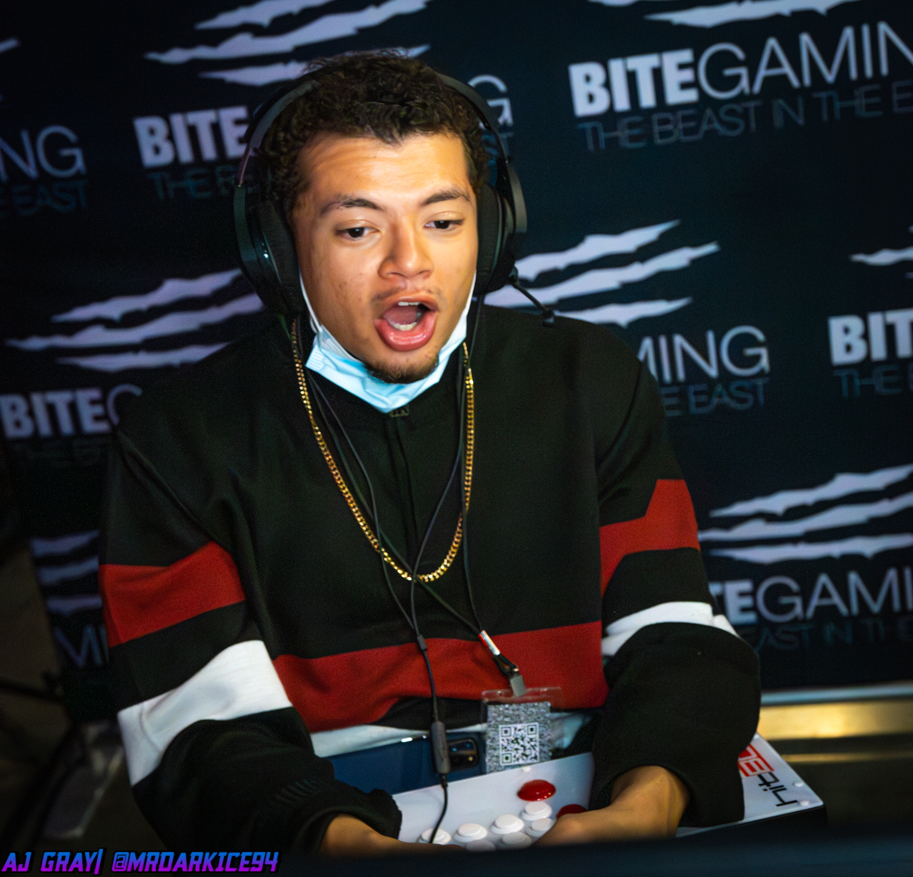

| Gaming accomplishments | Educational/Work experience | Skills/Abilities | Things my exes/friends say to me |
|---|---|---|---|
| Was the best Guilty Gear Strive player in NC from March - July 2022. | Started working fulltime since I was 17, haven't stopped since. I mostly do tech, so think IT or app development with a copious helping of data science. | Experience with Unity Game Engine. I've used it the most for working with groups, and it's popular for a reason. | "How can you listen to this? It's just noise" |
| Won over 9 seperate 16+ man tournaments for Guilty Gear Strive (over 600$ earned in total). | Pretty diverse set of work done. I typically gravitate towards leadership positions, but only after I have a stretch of learning how to do EVERY task myself. I want that broad perspective and I value it a lot. | Lots of experience with the Godot game engine. My personal go-to for game development. Too bad people dont know about it. | "Yes, you're muscular and you lift a lot of weight, but you're not 'fit' because you don't have a six pack" |
| Tournament champion for old anime games like +R, XRD, BBCF, EFZ | Started at Guilford Technical Community College, moved to A&T for the job placement programs after graduation. | I work with the Computational Data Science and Engineering dept. for Data visualization and VR. | "Why are you planning on going to grad school/making games intead of getting paid immediatley after college" |
| RPG fanatic. I don't like DND, but I play (read: DM) it the most. | Hands on knowledge with lots of data structures and performance optimizations. Having a strong gamedev background will give you TONS of skills. | I trained in IT before moving over to COMPSCI. I've set up networks & firewalls and camera systems before, as well as typical desk job IT stuff. It gives me a great perspective on how this tech is used from different sides. | "Why do you wake up at 6am everyday, there's no reason for that." |
I'm still young, but I'm happy with my career experience and technical knowledge. I focus a lot on trying to give myself a good future. I party hard, but I'm great at choosing the right times to do it (i.e. after I've got all my work done.).
 at a maid cafe. This would've been up in Virginia. Good times. Look at those calves!")